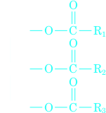
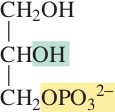

The Catabolism of Fats
We have seen that in the first two stages of catabolism, fats, carbohydrates, and proteins are converted to compounds that can enter the citric acid cycle. Here we will look at the reactions that allow fats to enter the citric acid cycle.
In the first stage of fat catabolism, the fat’s three ester groups are hydrolyzed by an enzyme-catalyzed reaction to glycerol and three fatty acid molecules
|  Triacylglycerols (fats) | + H2O | enzyme ⟶ |  Glygerol | + 3 RCOOH Fatty Acids |
The following reaction sequence shows what happens to glycerol, one of the products of the preceding reaction, in the second stage of catabolism.
Glygerol | ATP ⤷ ⟶ glycerol kinase ⤷ ADP |  glycerol-3-phosphate | NAD+,Zn2+ ⤷ ⟶ glycerol phosphate dehydrogenasee ⤷ NADH,H+ |  dihydroxyacetone phosphate |
Glycerol reacts with ATP to form glycerol-3-phosphate in the same way that glucose reacts with ATP to form glucose-6-phosphate. The enzyme that catalyzes this reaction is called glycerol kinase. A kinase is an enzyme that puts a phosphate group on its substrate; thus, glycerol kinase puts a phosphate group on glycerol. Notice that this ATP-requiring enzyme also requires Mg2+.
The secondary alcohol group of glycerol-3-phosphate is then oxidized by NAD+ to a ketone. The enzyme that catalyzes this reaction is called glycerol phosphate dehydrogenase. Recall that a dehydrogenase is an enzyme that oxidizes its substrate. We have seen that when a substrate is oxidized by NAD+, the substrate donates a hydride ion to the 4-position of the pyridine ring ( Section 24.1 ). Zn2+ is a cofactor for the reaction; it increases the acidity of the secondary alcohol’s proton by coordinating to the oxygen ( Section 23.5 ).